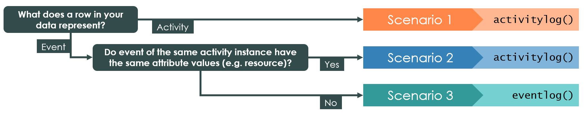

bupaR Docs | Create Logs

Creating logs
Transforming your raw data into an event log object is one of the most challenging tasks in process analysis. On this page, we cover all the possible situations and challenges that you can encounter.
We start with some important terminology:
- Case: The subject of your process, e.g. a customer, an order, a patient.
- Activity: A step in your process, e.g. receive order, sent payment, perform MRI SCAN, etc.
- Activity instance: The execution of a specific step for a specific case.
- Event: A registration connected to an activity instance, characterized by a single timestamp. E.g. the start of Perform MRI SCAN for Patient X.
- Resource: A person or machine that is related to the execution of (part of) an activity instance. E.g. the radiologist in charge of our MRI SCAN.
- Lifecycle status: An indication of the status of an activity instance connect to an event. Typical values are start, complete. Other possible values are schedule, suspend, resume, etc.
- Trace: A sequence of activities. The activity instances that belong to a case will result to a specific trace when ordered by the time each instance occurred.
Logs: eventlog vs activitylog
bupaR supports two different kinds of log formats, both
of which are an extension on R data.frame:
eventlog: Event logs are created fromdata.framein which each row represents a single event. This means that it has a single timestamp.activitylog: Activity logs are created fromdata.framein which each row represents a single activity instances. This means it can has multiple timestamps, stored in different columns.
The data model below shows the difference between these two levels of observations, i.e. activity instances vs events.

The example below shows an excerpt of an event log containing 6 events. It can be seen that each event is linked to a single timestamp. As there can be more events within a single activity instance, each event also needs to be linked to a lifecycle status (here the registration_type). Furthermore, an activity instance identifier (handling_id) is needed to indicated which events belong to the same activity instances.
| handling | patient | employee | handling_id | registration_type | time |
|---|---|---|---|---|---|
| Registration | 89 | r1 | 89 | start | 2017-04-04 06:54:12 |
| Registration | 89 | r1 | 89 | complete | 2017-04-04 09:08:36 |
| Triage and Assessment | 89 | r2 | 589 | start | 2017-04-04 22:17:12 |
| Triage and Assessment | 89 | r2 | 589 | complete | 2017-04-05 11:45:27 |
| X-Ray | 89 | r5 | 1518 | start | 2017-04-05 20:55:30 |
| X-Ray | 89 | r5 | 1518 | complete | 2017-04-06 04:16:10 |
![]()
The table below show the same data as above, but now using the
activitylog format. It can be seen that there are now just
3 rows instead of 6, but each row as 2 timestamps, representing 2
events. The lifecycle status represented by those timestamps is now the
column names of those variables.
| handling | patient | employee | handling_id | complete | start |
|---|---|---|---|---|---|
| Registration | 89 | r1 | 89 | 2017-04-04 09:08:36 | 2017-04-04 06:54:12 |
| Triage and Assessment | 89 | r2 | 589 | 2017-04-05 11:45:27 | 2017-04-04 22:17:12 |
| X-Ray | 89 | r5 | 1518 | 2017-04-06 04:16:10 | 2017-04-05 20:55:30 |
As these examples show, both formats can often be used for representing the same process data. However, there are some important differences between them:
- the
eventlogformat has much more flexibility in terms of lifecycle. There is no limit to the number of events that can occur in a single activity instance. If your data contains lifecycle statuses such as suspend, resume or reassign, they can be recorded multiple times within a single activity instance. In theactivitylogformat, as each lifecycle gets is own column, it isn’t possible to have two events of the same lifecycle status in a single activity instance. - the level of observation in an
eventlogis an event. As a result, attribute values can be stored at the event level. In anactivitylog, the level of observation is an activity instance. This means that all additional attributes that you have about your process should be at this higher level. For example, an activity instance can only be connected to a single resource in theactivitylogformat, whereas in aneventlogdifferent events within the same activity instance can have different resources, of different values for any other attribute. - because of the limited flexibility, an
activitylogis easier to make, and typically closer to the format that your data is already in (see further below on how to constructlogobjects). As a result of this, there are many situations in which the analysis of anactivitylogwill be much faster compared toeventlog, where a lot of additional complexity needs to be taken into account.
The right log for the job
Functionalities in bupaR core packages support both formats. 1 As such, the goal of your analysis does not impact the decision. Only the complexity of your data is important to make this decision. The precise format your raw data is in will further define the preparatory steps that are needed. We can distinguish between 3 typical scenarios. The flowchart below helps you on your way.

An activitylog is the best option when each row in your
data is an activity instance, or when events belonging to the same
activity instance have equal attribute values (e.g. all events are
executed by the same resource). When these two criteria do not hold, you
can create an eventlog object.
Scenario 1
If each row in your data.frame is already an activity
instance, the activitylog format is the best way to go.
Consider the data sample below.
| patient | handling | activity_started | activity_ended |
|---|---|---|---|
| 170 | Blood test | 2017-06-18 22:51:07 | 2017-06-19 03:01:11 |
| 170 | Check-out | 2017-06-20 03:48:37 | 2017-06-20 05:36:40 |
| 170 | Discuss Results | 2017-06-19 22:46:10 | 2017-06-20 01:44:29 |
| 170 | MRI SCAN | 2017-06-19 06:44:30 | 2017-06-19 11:40:53 |
| 170 | Registration | 2017-06-17 15:10:30 | 2017-06-17 16:31:58 |
| 170 | Triage and Assessment | 2017-06-17 16:31:58 | 2017-06-18 04:14:55 |
As each row contains multiple timestamps, i.e. activity_started and
activity_ended, it is clear that each row represents an activity
instance. Turning this dataset in an activitylog requires
the following steps:
- Timestamp variables should be named in correspondence with the standard Transactional lifecycle.
- Timestamp variables should be of type
DateorPOSIXct. - Use the
activitylogconstructor function.
data %>%
# rename timestamp variables appropriately
dplyr::rename(start = activity_started,
complete = activity_ended) %>%
# convert timestamps to
convert_timestamps(columns = c("start", "complete"), format = ymd_hms) %>%
activitylog(case_id = "patient",
activity_id = "handling",
timestamps = c("start", "complete"))## # Log of 12 events consisting of:
## 1 trace
## 1 case
## 6 instances of 6 activities
## 0 resources
## Events occurred from 2017-06-17 15:10:30 until 2017-06-20 05:36:40
##
## # Variables were mapped as follows:
## Case identifier: patient
## Activity identifier: handling
## Resource identifier: employee
## Timestamps: start, complete
##
## # A tibble: 6 × 5
## patient handling start complete .order
## <chr> <fct> <dttm> <dttm> <int>
## 1 170 Blood test 2017-06-18 22:51:07 2017-06-19 03:01:11 1
## 2 170 Check-out 2017-06-20 03:48:37 2017-06-20 05:36:40 2
## 3 170 Discuss Results 2017-06-19 22:46:10 2017-06-20 01:44:29 3
## 4 170 MRI SCAN 2017-06-19 06:44:30 2017-06-19 11:40:53 4
## 5 170 Registration 2017-06-17 15:10:30 2017-06-17 16:31:58 5
## 6 170 Triage and Assessment 2017-06-17 16:31:58 2017-06-18 04:14:55 6Note that in case a resource identifier is available, this
information can be added in the activitylog call.
Scenario 2
If each row in your data.frame is an event, but all
events that belong to the same activity instance share the same
attribute values, the activitylog format is again the best
way to go. Consider the data sample below.
| patient | handling | employee | handling_id | registration_type | time |
|---|---|---|---|---|---|
| 59 | Registration | r1 | 59 | started | 2017-03-07 02:53:18 |
| 59 | Triage and Assessment | r2 | 559 | started | 2017-03-07 04:27:53 |
| 59 | Registration | r1 | 59 | completed | 2017-03-07 04:27:53 |
| 59 | Triage and Assessment | r2 | 559 | completed | 2017-03-07 18:45:53 |
| 59 | Blood test | r3 | 1027 | started | 2017-03-08 04:52:55 |
| 59 | Blood test | r3 | 1027 | completed | 2017-03-08 12:23:02 |
| 59 | MRI SCAN | r4 | 1264 | started | 2017-03-11 19:31:13 |
| 59 | MRI SCAN | r4 | 1264 | completed | 2017-03-12 01:24:26 |
| 59 | Discuss Results | r6 | 1793 | started | 2017-03-12 06:50:13 |
| 59 | Check-out | r7 | 2288 | started | 2017-03-12 08:49:18 |
| 59 | Discuss Results | r6 | 1793 | completed | 2017-03-12 08:49:18 |
| 59 | Check-out | r7 | 2288 | completed | 2017-03-12 10:24:35 |
The resource identifier (employee) has been added as an additional
attribute. Note that though each row is an event, they can be grouped
into activity instances using the handling_id column, which we will call
the activity instance id. Using the latter, we can see that the resource
attribute is the same within each activity instance, which allows us to
create an activitylog. The steps to do so are the
following.
- Lifecycle variable should be named in correspondence with the standard Transactional lifecycle.
- Timestamp variable should be of type
DateorPOSIXct. - Use the
eventlogconstructor function. - Convert to
activitylogusingto_activitylogfor reduced memory usage and improved performance.
data %>%
# recode lifecycle variable appropriately
dplyr::mutate(registration_type = forcats::fct_recode(registration_type,
"start" = "started",
"complete" = "completed")) %>%
convert_timestamps(columns = "time", format = ymd_hms) %>%
eventlog(case_id = "patient",
activity_id = "handling",
activity_instance_id = "handling_id",
lifecycle_id = "registration_type",
timestamp = "time",
resource_id = "employee") %>%
to_activitylog() -> tmp_actNote that the resource identifier is optional, and can be left out of
the eventlog call if such an attribute does not exist in
your data. If the activity instance id does not exist, some heuristics
are available to generate it: [Missing activity instance
identifier].
Scenario 3
If each row is an event, and events of the same activity instance
have differing attribute values, the flexibility of
eventlog objects is required. Consider the data sample
below.
| patient | handling | employee | handling_id | registration_type | time |
|---|---|---|---|---|---|
| 182 | Registration | r1 | 182 | started | 2017-06-25 11:18:08 |
| 182 | Registration | r6 | 182 | completed | 2017-06-25 15:01:00 |
| 182 | Triage and Assessment | r7 | 682 | started | 2017-06-25 22:36:32 |
| 182 | Triage and Assessment | r2 | 682 | completed | 2017-06-26 16:03:00 |
| 182 | X-Ray | r5 | 1568 | started | 2017-06-28 07:03:55 |
| 182 | X-Ray | r5 | 1568 | completed | 2017-06-28 11:30:00 |
| 182 | Discuss Results | r7 | 1916 | started | 2017-07-02 11:16:08 |
| 182 | Discuss Results | r1 | 1916 | completed | 2017-07-02 14:19:52 |
| 182 | Check-out | r2 | 2411 | started | 2017-07-03 03:39:52 |
| 182 | Check-out | r6 | 2411 | completed | 2017-07-03 06:45:20 |
In this example, different resources (employees) sometimes perform
the start and complete event of the same activity instance. Therefore,
we resort to the eventlog format which has no problems
storing this. The steps to take are the following:
- Lifecycle variable should be named in correspondence with the standard Transactional lifecycle.
- Timestamp variable should be of type
DateorPOSIXct. - Use the
eventlogconstructor function.
data %>%
# recode lifecycle variable appropriately
dplyr::mutate(registration_type = forcats::fct_recode(registration_type,
"start" = "started",
"complete" = "completed")) %>%
convert_timestamps(columns = "time", format = ymd_hms) %>%
eventlog(case_id = "patient",
activity_id = "handling",
activity_instance_id = "handling_id",
lifecycle_id = "registration_type",
timestamp = "time",
resource_id = "employee") ## Warning in validate_eventlog(eventlog): The following activity instances are
## connected to more than one resource: 182,1916,2411,682## # Log of 10 events consisting of:
## 1 trace
## 1 case
## 5 instances of 5 activities
## 5 resources
## Events occurred from 2017-06-25 11:18:08 until 2017-07-03 06:45:20
##
## # Variables were mapped as follows:
## Case identifier: patient
## Activity identifier: handling
## Resource identifier: employee
## Activity instance identifier: handling_id
## Timestamp: time
## Lifecycle transition: registration_type
##
## # A tibble: 10 × 7
## patient handling emplo…¹ handl…² regis…³ time .order
## <chr> <fct> <fct> <chr> <fct> <dttm> <int>
## 1 182 Registration r1 182 start 2017-06-25 11:18:08 1
## 2 182 Registration r6 182 comple… 2017-06-25 15:01:00 2
## 3 182 Triage and Assess… r7 682 start 2017-06-25 22:36:32 3
## 4 182 Triage and Assess… r2 682 comple… 2017-06-26 16:03:00 4
## 5 182 X-Ray r5 1568 start 2017-06-28 07:03:55 5
## 6 182 X-Ray r5 1568 comple… 2017-06-28 11:30:00 6
## 7 182 Discuss Results r7 1916 start 2017-07-02 11:16:08 7
## 8 182 Discuss Results r1 1916 comple… 2017-07-02 14:19:52 8
## 9 182 Check-out r2 2411 start 2017-07-03 03:39:52 9
## 10 182 Check-out r6 2411 comple… 2017-07-03 06:45:20 10
## # … with abbreviated variable names ¹employee, ²handling_id, ³registration_typeNote that we need an eventlog irrespective of which
attribute values are differing, i.e. it can be resources, but also any
additional variables you have in your data set. For the special case of
resource values, it might be that a different resource executing events
in the same activity instance is a data quality issue. If so, some
functions can help you to identify this issue: Inconsistent Resources.
Again, if the activity instance id does not exist, some heuristics are available to generate it: [Missing activity instance identifier].
Typical problems
Missing activity instance id
In order to be able to correlate events which belong to the same activity instance, an activity instance identifier is required. For example, in the data shown below, it is possible that a patient has gone through different surgeries, each with their own start- and complete event. The activity instance identifier will then allow to distinguish which events belong together and which do not. It is important to note that this instance identifier should be unique, also among different cases and activities.
| patient | activity | timestamp | status | activity_instance |
|---|---|---|---|---|
| John Doe | check-in | 2017-05-10 08:33:26 | complete | 1 |
| John Doe | surgery | 2017-05-10 08:53:16 | start | 2 |
| John Doe | surgery | 2017-05-10 09:25:19 | complete | 2 |
| John Doe | treatment | 2017-05-10 10:01:25 | start | 3 |
| John Doe | treatment | 2017-05-10 10:35:18 | complete | 3 |
| John Doe | surgery | 2017-05-10 10:41:35 | start | 4 |
| John Doe | surgery | 2017-05-10 11:05:56 | complete | 4 |
| John Doe | check-out | 2017-05-11 14:52:36 | complete | 5 |
If the activity instance identifier is not available you can use the
assign_instance_id() function, which uses an heuristic to
create the missing identifier. Alternatively, you can try to create the
identifier on your own using dplyr::mutate() and other
manipulation functions.
Large Datasets and Validation
By default, bupaR validates certain properties of the
activity instances that is supplied when creating an event log:
- a single activity instance identifier must not be connected to multiple cases,
- a single activity instance identifier must not be connected to multiple activity labels,
However, these checks are not efficient and may lead to considerable
performance issues for large data frames. It is possible to deactivate
the validation in case you already know that your data fulfills all the
requirements, using the argument validate = FALSE when
creating the eventlog. Note that when the activity instance
id was created with the assign_instance_id() function, you
can assume the above properties hold.
Inconsistent Resources
Each event can contain the notion of a resource. It can be so that
different events belonging to the same activity instance are executed by
different resources, as in the eventlog below.
| patient | handling | employee | handling_id | registration_type | time | .order |
|---|---|---|---|---|---|---|
| 139 | Registration | r7 | 139 | start | 2017-05-17 08:37:35 | 1 |
| 139 | Triage and Assessment | r4 | 639 | start | 2017-05-17 10:33:49 | 2 |
| 139 | Registration | r1 | 139 | complete | 2017-05-17 10:33:49 | 3 |
| 139 | Triage and Assessment | r6 | 639 | complete | 2017-05-18 02:32:38 | 4 |
| 139 | Blood test | r6 | 1068 | start | 2017-05-18 23:10:39 | 5 |
| 139 | Blood test | r1 | 1068 | complete | 2017-05-19 03:57:40 | 6 |
| 139 | MRI SCAN | r2 | 1305 | start | 2017-05-19 07:57:18 | 7 |
| 139 | MRI SCAN | r2 | 1305 | complete | 2017-05-19 11:34:01 | 8 |
| 139 | Discuss Results | r7 | 1873 | start | 2017-05-19 17:20:52 | 9 |
| 139 | Discuss Results | r3 | 1873 | complete | 2017-05-19 20:41:58 | 10 |
| 139 | Check-out | r3 | 2368 | start | 2017-05-21 17:29:34 | 11 |
| 139 | Check-out | r4 | 2368 | complete | 2017-05-21 18:44:55 | 12 |
If you have a large dataset, and want to have an overview of the
activity instances that have more than one resource connected to them,
you can use the detect_resource_inconsistences()
function.
log %>%
detect_resource_inconsistencies()## # A tibble: 5 × 5
## patient handling handling_id complete start
## <chr> <fct> <chr> <chr> <chr>
## 1 139 Blood test 1068 r1 r6
## 2 139 Check-out 2368 r4 r3
## 3 139 Discuss Results 1873 r3 r7
## 4 139 Registration 139 r1 r7
## 5 139 Triage and Assessment 639 r6 r4If you want to remove these inconsistencies, a quick fix is to merge
the resource labels together with
fix_resource_inconsistencies(). Note that this is not
needed for eventlog, but it is for
activitylog. While the creation of the
eventlog will emit a warning when resource inconsistencies
exist, this should mostly be seen as a data quality warning. That said,
there might be analysis related to the counting of resources where such
inconsistencies might lead to odd results.
log %>%
fix_resource_inconsistencies()## *** OUTPUT ***## A total of 5 activity executions in the event log are classified as inconsistencies.## They are spread over the following cases and activities:## # A tibble: 5 × 5
## patient handling handling_id complete start
## <chr> <fct> <chr> <chr> <chr>
## 1 139 Blood test 1068 r1 r6
## 2 139 Check-out 2368 r4 r3
## 3 139 Discuss Results 1873 r3 r7
## 4 139 Registration 139 r1 r7
## 5 139 Triage and Assessment 639 r6 r4## Inconsistencies solved succesfully.## # Log of 12 events consisting of:
## 1 trace
## 1 case
## 6 instances of 6 activities
## 6 resources
## Events occurred from 2017-05-17 08:37:35 until 2017-05-21 18:44:55
##
## # Variables were mapped as follows:
## Case identifier: patient
## Activity identifier: handling
## Resource identifier: employee
## Activity instance identifier: handling_id
## Timestamp: time
## Lifecycle transition: registration_type
##
## # A tibble: 12 × 7
## patient handling emplo…¹ handl…² regis…³ time .order
## <chr> <fct> <chr> <chr> <fct> <dttm> <int>
## 1 139 Registration r1 - r7 139 start 2017-05-17 08:37:35 1
## 2 139 Triage and Assess… r6 - r4 639 start 2017-05-17 10:33:49 2
## 3 139 Registration r1 - r7 139 comple… 2017-05-17 10:33:49 3
## 4 139 Triage and Assess… r6 - r4 639 comple… 2017-05-18 02:32:38 4
## 5 139 Blood test r1 - r6 1068 start 2017-05-18 23:10:39 5
## 6 139 Blood test r1 - r6 1068 comple… 2017-05-19 03:57:40 6
## 7 139 MRI SCAN r2 1305 start 2017-05-19 07:57:18 7
## 8 139 MRI SCAN r2 1305 comple… 2017-05-19 11:34:01 8
## 9 139 Discuss Results r3 - r7 1873 start 2017-05-19 17:20:52 9
## 10 139 Discuss Results r3 - r7 1873 comple… 2017-05-19 20:41:58 10
## 11 139 Check-out r4 - r3 2368 start 2017-05-21 17:29:34 11
## 12 139 Check-out r4 - r3 2368 comple… 2017-05-21 18:44:55 12
## # … with abbreviated variable names ¹employee, ²handling_id, ³registration_typeRead more:
Currently both
eventlogandactivitylogare supported by the packagesbupaR,edeaRandprocessmapR. Thedaqapopackage only supportsactivitylog, while all other packages only supporteventlog. While the goal is to extend support for both to all packages, you can in the meanwhile always convert the format of your log using the functionsto_eventlog()andto_activitylog().↩︎
Copyright © 2023 bupaR - Hasselt University